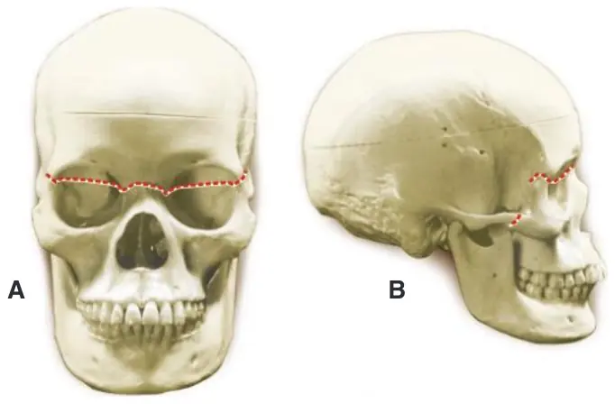

نسخه استخراجشده؛ ترجمه یا تأیید علمی انجام نشده است. وضعیت: captured
میدفیس از استخوانهای نازال، لاکریمال، اتموئید، اسفنوئید، ماگزیلا، زیگوماتیک و پالاتین ساخته شده است. و شکستگیهای درگیرکنندهی استخوان فرونتال و میدفیس «اغلب پیچیدهاند، چند استخوان را در بر میگیرند، و عوارض جدی احتمالی از درگیری داخلجمجمهای دارند».

و هشت نشانهی بالینی آسیب میدفیس — این فهرست را حفظ کن: اکیموز پریاوربیتال، پارستزی عصب اینفرااوربیتال، تورم صورت، بدشکلی قابل رؤیت یا لمس بینی، اپیستاکسی با یا بدون نشت مایع مغزی-نخاعی، بدشکلی زیگوماتیک یا کشیده شدن صورت، اکیموز وستیبولار و پالاتال، و مالاکلوژن یا نقص پلهای در صفحهی اکلوزال ماگزیلا.
و چرا MDCT روش انتخابی است؟ «کشف شکستگیهای میدفیس روی تصویر دشوار است، بهدلیل آناتومی پیچیده و سوپرایمپوزیشنهای متعدد ساختارها.» MDCT «برشهای متعدد در صفحات متعامد» میسازد و ساختار استخوانی را بدون پیچیدگی آناتومی رویهمافتاده نشان میدهد — و افزون بر آن، جزئیات بافت نرم برای کشف فتق چربی اوربیت و عضلهی خارجچشمی، تورم یا آمفیزم بافت نرم، و تجمع خون یا مایع میدهد. دادههای آن را میتوان به بازسازی سهبعدی سطحی تبدیل کرد.
و اول، تعریفی که همهی سه الگو را به هم میبندد: «بنا به تعریف، همهی شکستگیهای لوفور شامل شکستگی یک یا چند صفحهی پتریگوئید استخوان اسفنوئید هستند.» و نکتهای که خلاف انتظار است: «هرچند شکستگیهای لوفور میتوانند دوطرفه باشند، اغلب یکطرفهاند.»
لوفور I (شکستگی افقی). صفحهی شکستگی «بهطور نسبتاً افقی از بدنهی ماگزیلا میگذرد و به جدا شدن زائدهی آلوئولار و استخوان مجاور ماگزیلا از میدفیس» میانجامد. نیروی وارده افقی و به سمت خلف در قاعدهی بینی است. مسیر: بالای ریشهی دندانها و کف بینی، و از خلف از قاعدهی سینوس ماگزیلاری و توبروزیته.
و افتراق مهمش: شکستگی یکطرفهی لوفور I «باید از شکستگی درون زائدهی آلوئولار تفکیک شود که به خط وسط امتداد نمییابد و صفحات پتریگوئید را از خلف درگیر نمیکند». و همراهیها: شکستگی همزمان مندیبل در ۵۴٪ و استخوان زیگوماتیک در ۲۳٪ بیماران.
و یک منطق بالینی زیبا در لوفور I: «اگر صفحهی شکستگی در سطح بالا باشد، قطعه ممکن است محل اتصال عضلات پتریگوئید را در بر بگیرد، که قطعه را به سمت خلفی و تحتانی میکشد. در نتیجه، دندانهای خلفی ماگزیلا اول با دندانهای مندیبل تماس میگیرند و اپنبایت قدامی، چانهی عقبرفته و صورت کشیده پدید میآید. اگر شکستگی در سطح پایین باشد، هیچ جابهجایی رخ نمیدهد.» — یعنی ارتفاع شکستگی، تظاهر بالینی را تعیین میکند.
لوفور II (شکستگی هرمی). نامش از شکل هرمی روی تصویر خلفی-قدامی جمجمه میآید. نیرو «به سمت خلف و فوقانی از قاعدهی بینی» وارد میشود و ماگزیلا را از قاعدهی جمجمه جدا میکند. مسیر: از پل بینی به سمت تحتانی، جانبی و خلفی از استخوانهای نازال و لاکریمال، کف و لبهی تحتانی اوربیت بهطور مورب، و سپس از عرض ماگزیلا تا زوائد پتریگوئید. سینوسهای فرونتال و اتموئید در حدود ۱۰٪ موارد درگیر میشوند.
و تضاد بالینی لوفور I و II را حفظ کن: لوفور I «ممکن است تنها با تورم خفیف اطراف لب بالا مشخص شود»؛ ولی لوفور II «ادم گسترده و تورم مشخص یکسوم میانی صورت» میسازد. اکیموز ظرف چند دقیقه دور چشمها پدید میآید، و «ادم چنان شدید است که دیدن کرههای چشم ناممکن میشود». ملتحمه در ربع داخلی چشمها خونمردگی دارد؛ و اگر استخوانهای زیگوماتیک هم درگیر باشند، این اکیموز به ربع خارجی هم میرسد.
و در لوفور II: بینی شکسته جابهجا است چون صورت فرو افتاده، و بینی و صورت کشیده میشوند. اپنبایت قدامی رخ میدهد، اپیستاکسی اجتنابناپذیر است، و رینورهی مایع مغزی-نخاعی ممکن است پدید بیاید — و اگر دیوارههای خلفی یا فوقانی سینوس فرونتال درگیر باشند، مداخلهی نوروسرجری لازم است.
لوفور III (جدایی کرانیوفاسیال). وقتی نیرو «بهقدری بزرگ باشد که یکسوم میانی اسکلت صورت را بهطور کامل از جمجمه جدا کند». مسیر: از استخوان نازال و زائدهی فرونتال ماگزیلا یا درزهای نازوفرونتال و ماگزیلوفرونتال، از عرض کف اوربیت، از سلولهای هوایی اتموئید و سینوس اسفنوئید، و سپس از شکاف پتریگوماگزیلاری که قاعدهی صفحات پتریگوئید را از استخوان اسفنوئید جدا میکند.
و یک استنتاج ظریف در لوفور III: «اگر ماگزیلا جابهجا و آزادانه متحرک باشد، شکستگی باید در درز زیگوماتیکوتمپورال هم رخ داده باشد.» و چون استخوان یا قوس زیگوماتیک درگیر است، این آسیبها با شکستگیهای متعدد دیگر ماگزیلا همراهاند؛ و شکستگی مندیبل در نیمی از موارد دیده میشود.
سؤالهای این مرور سختترند و بسیاری از آنها یک یافتهی بالینی میدهند — جهت جابهجایی، نوع اپنبایت، یا ناتوانی در یک حرکت — و میپرسند کدام شکستگی آن را توضیح میدهد.